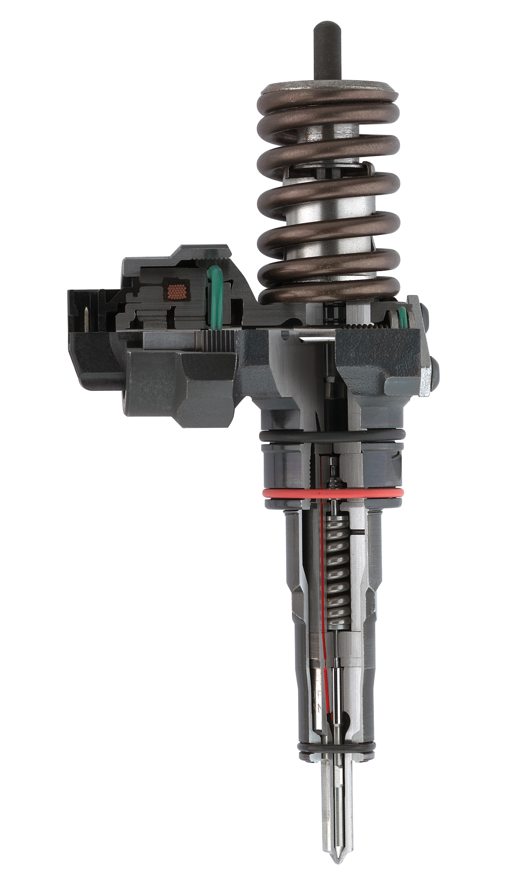
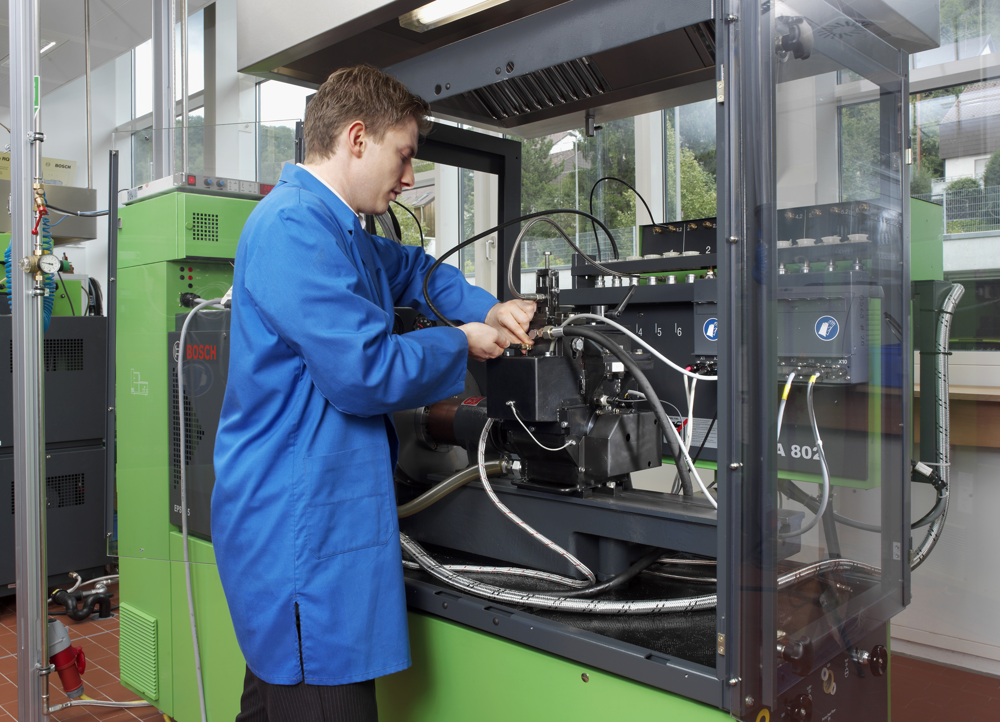
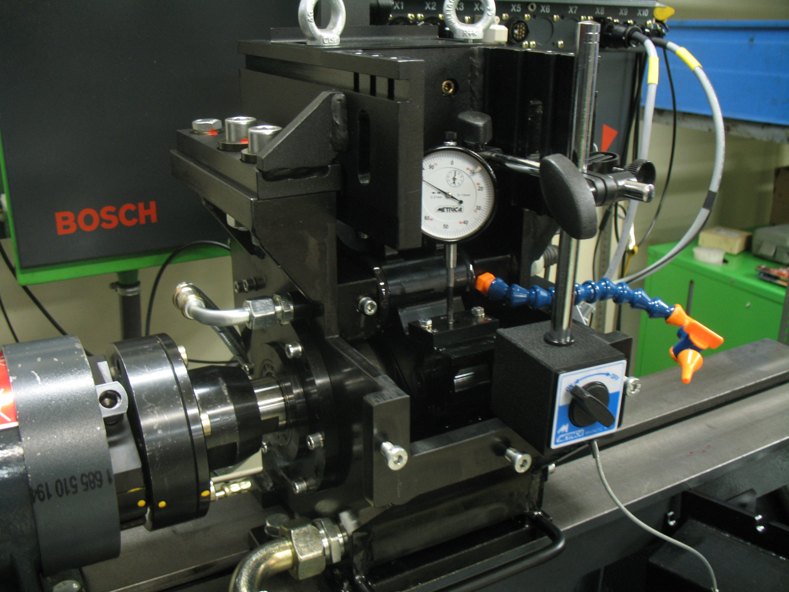

A képen a Common Rail magasnyomású rendszer vetélytársa, a PDE adagoló-porlasztó egység két kivitele látható. Ennél a rendszernél hengerenként egybe van építve a nagynyomású szivattyú és a porlasztó. Bal oldalon a VW személygépkocsikba, jobb oldalon a Land Rover terepjárókba beépített konstrukciós megoldása látható. Mindkét esetben a porlasztók üzemanyagellátása a hengerfej belsejében kiképzett csatornákon keresztül történik. A nagy nyomást a vezérműtengelyen külön kiképzett bütyökprofil hozza létre. Mégpedig úgy, hogy egy himba közbeiktatásával megnyomja a PDE egység adagolóelem végét. A porlasztások számát, nagyságát, időtartamát a vezérlőegységben tárolt adatok alapján az elektro-hidraulikus része szabályozza a porlasztónak.
a képen a VW 1.9 PDTDI motorba kifejlesztett "Pumpen Düse" adagoló porlasztó egység metszeti képe látható. Javitás tecnológiája szerkezetéből adódóan, az alsó porlasztócsúcs részére korlátozódik. A felső részében lévő, mágnes tekercs által mozgatott vezérlő dugattyú, valamint a nagynyomási dugattyú, az öntvényházba kimunkált furatban mozog. Ezért ha ezek az illesztések megkopnak, nem javitható, cserélni kell az egészet. Ha a porlasztócsúcs sugárképe, zárása, nyitónyomása nem megfelelő, ez javitható.
 A képeken a Bosch EPS 815 próbapadra kifejlesztett gyári Cam Box rendszer látható. Ezzel a berendezéssel vizsgáljuk be az összes Bosch gyártmányu PDE és PLD egységet. Ebbe a hajtómüház egységbe kell adapterek segitségével befogni a különböző kialakitásu adagoló porlasztó egységeket vizsgálat céljából. Az egész mechanizmus úgy van kialakitva, hogy vezérlő bütykös tengelyhez képest beállitható a befogott egységek eltérő emelési, mozgatási magassága. A vezérlő bütyök szinkronizálva a próbapad számitógépjéből érkező mágnes tekercset vezérlő impulzus jellel. Különböző fordulatszámokon, eltérő kivezérlési idők mellett kerül bemérésre egy vizsgáló porlasztón keresztül a szállitott menyiség.